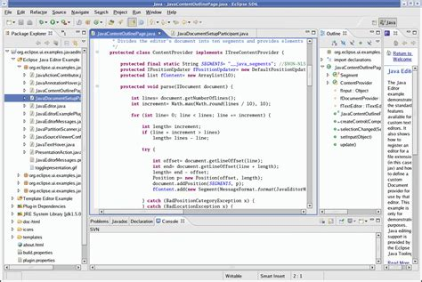

Objektum Orientált Proramozás
Ez a kurzus az Objektum Orientált Programozás alapjait tartalmazza
Tematika
- Az objektum-orientált programozás alapelvei.
- A Java programozási nyelv története alapvető sajátosságai, a Java platform.
- A nyelv alapelemei. Operátorok, tömbök, típusok.
- Vezérlési szerkezetek. Osztály és objektum, példányosítás. Hozzáférési kategóriák.